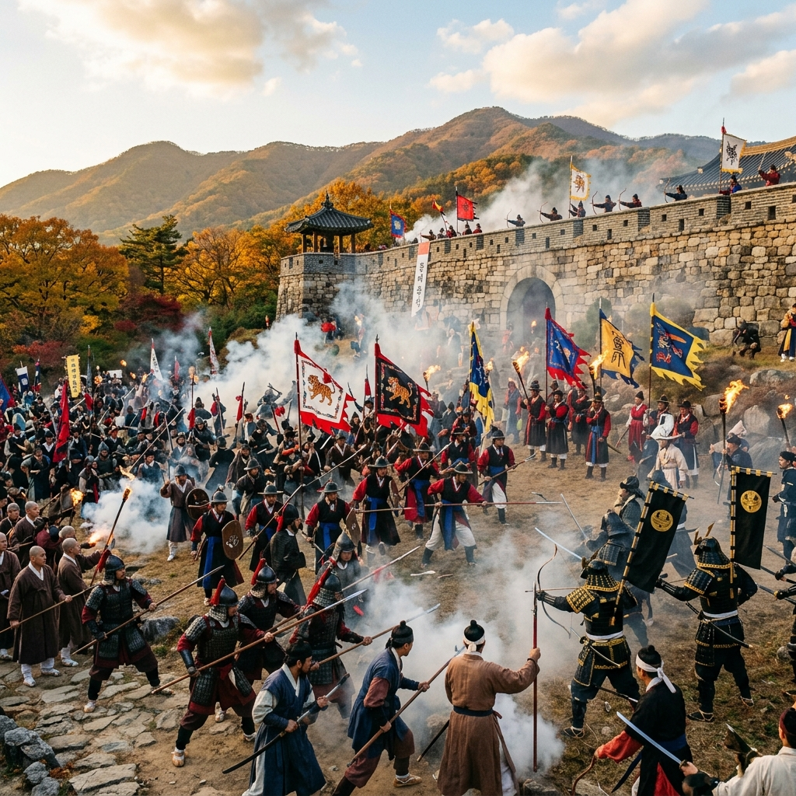
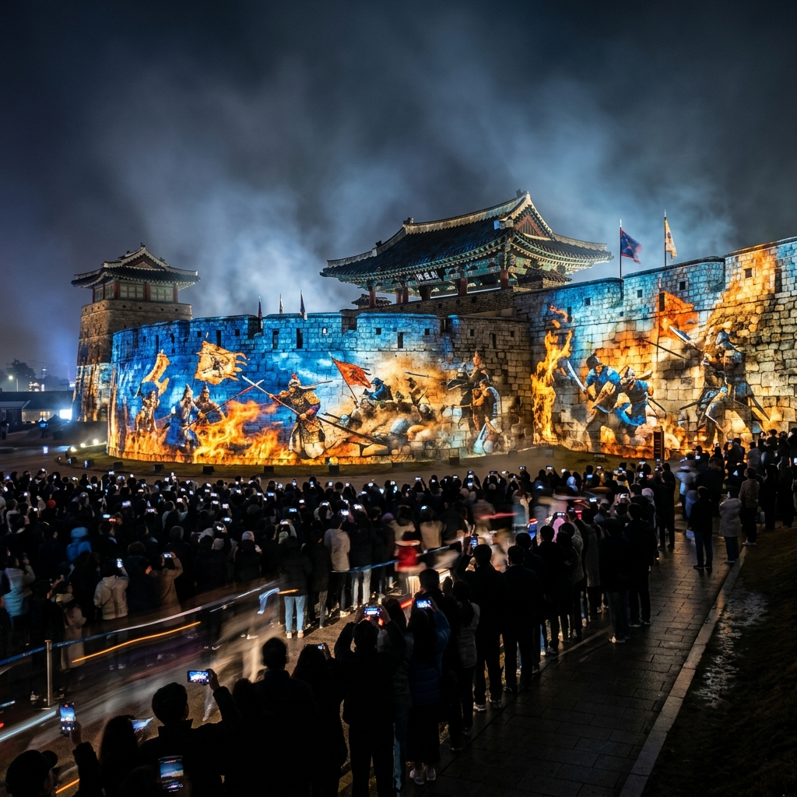
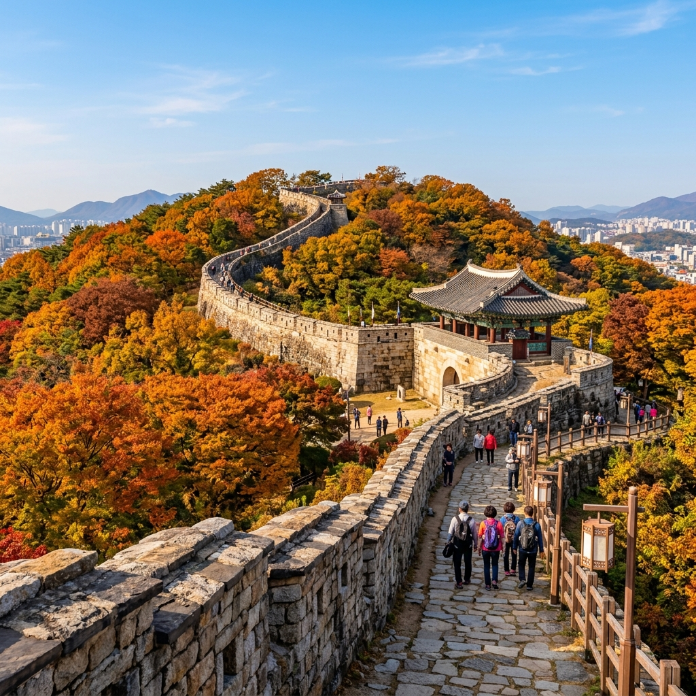

동래읍성역사축제 2026 — 임진왜란 동래성 전투 재현과 야간 미디어아트쇼 관람 완전 가이드
⚔️ 국내여행부산 동래구매년 10월 하순
"싸워서 죽기는 쉬우나 길을 빌려주기는 어렵다(戰死易 假道難)." 1592년 임진왜란 당시 동래부사 송상현이 왜군의 투항 요구를 거부하며 남긴 이 문장은, 4세기가 지난 지금도 동래의 공기 속에 생생히 살아 있습니다.
동래읍성역사축제는 그 역사적 현장인 부산 동래에서 매년 10월 하순에 개최되는 부산 대표 역사 축제입니다. 2025년 제31회를 맞이했으며, 2026년에는 제32회로 10월 하순 동래읍성 일원에서 열릴 예정입니다. 임진왜란 동래성 전투를 생생하게 재현하는 퍼레이드와 야간 미디어아트쇼, 전통 체험 프로그램으로 구성된 이 축제는 한국 역사 테마 축제 중 가장 완성도 높은 편으로 꼽힙니다.
| 항목 | 내용 |
|---|
| 행사명 | 제32회 동래읍성역사축제 (2026) |
| 개최 시기 | 2026년 10월 하순 (3일간, 공식 발표 기준) |
| 장소 | 부산 동래구 동래읍성 일원 (동래시장, 복천동 고분군, 동래성지) |
| 입장료 | 무료 (일부 체험 프로그램 유료) |
| 문의 | 동래구청 문화관광과 051-550-4092 |
| 교통 | 지하철 1호선 동래역 하차, 도보 10~15분 |
🏰 동래성 전투 — 역사 속 그날의 기록
1592년 4월 14일 왜군이 부산포에 상륙한 후 이틀 만인 4월 15일, 왜군 선봉 부대는 동래성에 도달했습니다. 당시 동래부사 송상현은 병력 규모에서 압도적으로 불리했음에도 성문을 굳게 닫고 항전을 결의했습니다. 왜군이 "싸우고 싶으면 싸우고, 그렇지 않으면 길을 비켜라"는 목패를 던지자, 송상현은 "싸워서 죽기는 쉬우나 길을 빌려주기는 어렵다"는 목패를 맞받아쳐 돌려보냈습니다.
이 결전은 수시간 만에 끝났습니다. 압도적인 왜군 병력 앞에 동래성은 함락되었고, 송상현 부사를 비롯한 수천 명의 관군과 백성이 장렬히 전사했습니다. 왜군 장수 소 요시토시는 송상현의 용기에 감동하여 그의 시신을 정중히 수습하고 제사를 올렸다는 기록이 남아 있습니다.
이 전투는 조선 역사상 가장 치열하고 비극적인 항전 중 하나로 기록됩니다. 동래성 함락 이후 왜군은 거침없이 북진하여 20일 만에 한양을 점령했습니다. 동래성 전투가 조금 더 오래 버텼다면 이후의 역사가 달라졌을지도 모른다는 평가가 있을 정도로, 그 전략적 의미 또한 컸습니다.

동래읍성역사축제 임진왜란 전투 재현 퍼레이드 / AI 제작 이미지
⚔️ 동래성 전투 재현 퍼레이드 — 축제 최고 하이라이트
동래읍성역사축제의 핵심 프로그램은 단연 임진왜란 동래성 전투 재현 퍼레이드입니다. 수백 명의 자원봉사 참가자들이 조선군 복식과 무장을 갖추고 동래성 성벽 일원에서 당시의 전투 과정을 생생하게 재현합니다.
퍼레이드는 크게 세 부분으로 구성됩니다. 먼저 왜군의 침입을 알리는 봉화 신호로 시작되고, 이어 조선 관군의 방어 포진 과정이 펼쳐집니다. 마지막으로 성벽에서의 백병전과 함락 과정, 그리고 전사자 추모 의식으로 마무리됩니다. 화포 연막 효과와 타격음 효과가 더해져 현장감이 극적으로 높아집니다.
관람 명당은 동래성 성벽 위 전망대 구역입니다. 축제 3일간 하루 2회(낮 공연, 저녁 공연) 진행되며, 저녁 공연은 조명 효과가 더해져 훨씬 드라마틱한 분위기를 자아냅니다. 인기 관람 구역은 공연 1시간 전부터 자리가 채워지므로, 미리 위치를 잡고 기다리는 여유 있는 접근이 필요합니다.
🌟 야간 미디어아트쇼 — 동래성 성벽이 스크린이 되는 밤
2020년대부터 도입된 야간 미디어아트쇼는 동래읍성 성벽 전면을 거대한 빔 프로젝션 스크린으로 활용합니다. 임진왜란의 역사, 동래 지역 문화, 미래의 평화로운 동래를 테마로 한 약 20~30분 분량의 3D 매핑 공연이 성벽 위에서 펼쳐집니다.
고해상도 프로젝터 여러 대가 성벽의 굴곡과 요철을 살려 입체적으로 영상을 투사하는 3D 미디어 파사드 기술을 적용합니다. 성벽이 무너지고, 불꽃이 타오르며, 병사들이 성벽 위를 달리는 영상 효과는 실제 성벽의 질감과 결합되어 그 어떤 스크린에서도 재현하기 어려운 독특한 몰입감을 선사합니다.
야간 미디어아트쇼는 축제 기간 매일 저녁 8시 이후 진행됩니다. 공연 위치는 동래성 남문지 앞 광장으로, 지상 관람 구역과 성벽 위 관람 구역으로 나뉩니다. 성벽 위에서 내려다보는 관람은 전혀 다른 시각적 경험을 제공하나, 사전 예약이 필요한 경우가 많습니다.

동래읍성역사축제 야간 미디어아트쇼 성벽 빔 프로젝션 / AI 제작 이미지
🎯 참여 체험 프로그램 총정리
전투 재현 관람 외에도 동래읍성역사축제는 다양한 참여형 체험 프로그램을 운영합니다. 아이들부터 어른까지 모두 즐길 수 있는 역사 체험의 장이 펼쳐집니다.
| 프로그램명 | 내용 | 대상 |
|---|
| 갑옷 투구 착용 체험 | 조선 관군 갑옷·투구 착용 및 기념사진 촬영 | 전 연령 |
| 활쏘기 체험 | 전통 국궁 체험 (사범 지도 하에 안전하게 진행) | 초등 이상 |
| 전통 무예 시연 관람 | 택견, 씨름, 기마술 등 전통 무예 시연 및 체험 | 전 연령 |
| 동래야류 탈춤 체험 | 국가무형문화재 동래야류 가면극 탈 쓰기 체험 | 전 연령 |
| 전통 복식 체험 | 조선시대 관복 및 민복 착용 체험 및 포토존 | 전 연령 |
| 역사 퀴즈 투어 | 동래 역사 스탬프 투어 및 퀴즈 이벤트 | 초등 이상 |
| 전통 음식 체험 | 동래 파전 만들기, 한과 만들기 등 | 전 연령 |
🏛️ 동래 역사 문화 유적 투어 — 축제장 주변 필수 코스
동래읍성역사축제가 열리는 동래 지역은 그 자체로 부산에서 역사 밀도가 가장 높은 구역입니다. 축제 관람과 함께 주변 유적을 돌아보면 훨씬 풍성한 역사 여행이 됩니다.
복천동 고분군 (국가사적 제273호)
삼국 시대 가야 및 신라 시대 고분 50여 기가 밀집된 부산 최대 고분군입니다. 1970년대 발굴을 통해 금동관, 철제 갑옷, 각종 토기류 등 5,000점 이상의 유물이 출토되었습니다. 고분군 옆 복천동고분박물관에서 출토 유물을 볼 수 있습니다. 무료 입장이며, 축제 기간 중 특별 전시도 병행됩니다.
동래부동헌 (부산시 지정 문화재)
조선시대 동래부 관청 건물 일부가 복원되어 있습니다. 송상현 부사가 전투 결의를 다진 현장으로, 역사 교육 측면에서 의미가 깊습니다.
동래향교
성리학 교육을 담당했던 조선시대 향교. 동래성 전투 이후 피해를 복구한 역사가 남아 있으며, 매년 봄·가을 석전대제가 거행됩니다.
🍜 동래 먹거리 투어 — 축제 후 반드시 먹어야 할 것들
동래는 부산의 전통적인 음식 문화가 살아 있는 구역입니다. 축제를 마친 후 동래시장 및 주변 식당가에서 즐길 수 있는 필수 메뉴를 소개합니다.
동래 파전: 동래 파전은 단순히 '파가 들어간 전'이 아닙니다. 동래 파전은 조선시대 수라상에 올랐던 궁중 음식에서 비롯된 전통 요리로, 쪽파와 각종 해물을 전 반죽 속에 넣어 두툼하게 구운 형태가 특징입니다. 동래시장 인근 파전 골목에서 원조 집들이 여전히 영업 중입니다.
동래온천 족욕 체험: 동래는 부산에서 가장 오랜 온천 역사를 지닌 곳이기도 합니다. 동래온천은 삼국시대부터 기록이 남아 있을 정도이며, 동래역 주변에 족욕 공원이 조성되어 있어 무료로 온천수 족욕을 즐길 수 있습니다. 축제로 발이 아프다면 여기서 피로를 풀어보세요.

동래읍성 성벽 가을 전경 — 10월 단풍과 역사 성곽의 조화 / AI 제작 이미지
🚇 교통 & 관람 실전 가이드
| 교통 수단 | 경로 |
|---|
| 지하철 (추천) | 부산 1호선 동래역 하차 → 4번 출구 → 도보 약 10분, 동래시장 방향으로 이동 |
| 지하철 대안 | 4호선 수안역 하차 → 복천동고분박물관 방면 도보 약 5분 |
| 버스 | 37, 50, 52, 83번 등 동래구청 정류장 하차 |
| 자동차 | 동래구청 주변 공영 주차장 이용. 축제 기간 주말 주차 매우 어려움 — 대중교통 강력 권장 |
💡 2026년 동래읍성역사축제 사전 준비 팁
축제는 10월 하순에 열립니다. 부산의 10월은 낮에는 따뜻하지만 저녁에는 쌀쌀합니다. 야간 미디어아트쇼와 저녁 공연 관람을 계획한다면 얇은 가을 외투를 꼭 챙기세요. 공식 일정은 8월 이후 동래구청 홈페이지(dongnae.go.kr/festival)에서 발표됩니다.
📋 동래읍성역사축제 1박 2일 추천 코스
[1일차 오전] 부산역 도착 → KTX 하차 후 동래역으로 이동 → 동래시장에서 동래파전 점심
[1일차 오후 2시] 동래읍성역사축제 개막 — 전통 체험 프로그램 (갑옷 착용, 활쏘기)
[1일차 오후 4시] 임진왜란 동래성 전투 재현 퍼레이드 관람
[1일차 저녁 8시] 야간 미디어아트쇼 관람 → 동래온천 족욕으로 피로 해소
[2일차 오전] 복천동 고분군 및 복천동고분박물관 관람 (무료)
[2일차 낮] 해운대 해수욕장 이동 (동래역 → 해운대역 지하철 약 20분) → 점심 식사 후 귀가
#동래읍성역사축제2026
#부산역사축제
#동래축제
#임진왜란재현
#동래성전투
#부산가을축제
#야간미디어아트
#동래읍성
#복천동고분군
#부산역사여행